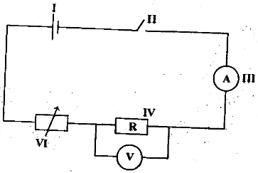

2018 BECE Science Past Questions – Paper Two

(i) Identify the fish
(ii) Name each of the parts labelled I, II, IV, V
(iii) Name the habitat of the fish
(iv) Explain how each of the parts labelled III and VI enables the fish adapt to its habitat.
(b) The diagram below is an illustration of a section through the soil. Study the diagram carefully and answer the questions that follow.

(i) What does the diagram represent?
(ii) Name each of the parts labelled I, II, III, IV
(iii) Which part of the diagram:
(α) is the richest in humus?
(β) is the habitat for soil organisms?
(γ) undergoes weathering?
(iv) What is the effect of heavy rainfall on the part labelled I?
(c) The diagram below is an illustration of an electrical circuit. Study the circuit and answer the questions that follow.
(i) Name each of the parts labelled I, II, IV, VI
(ii) State the energy transformation that takes place in:
(α) I
(β) IV
(iii) State the S.I. units of the quantity measured by each of the parts labelled
(α) III
(β) V
(iv) State the function of the part labelled VI
(d) In an experiment, equal volumes and equal concentrations of dilute hydrochloric acid and dilute sodium hydroxide solutions were each placed in different test tubes.
Read the following statements carefully
I. Both red and blue litmus papers were dipped into each of the solutions in turns.
II. Equal volumes of the solutions were mixed to obtain a third solution.
III. Both red and blue litmus papers were dipped into the third solution.
Use the information provided to answer the following questions.
(i) Explain briefly how you can identify each of the solutions.
(α) Hydrochloric acid;
(β) Sodium hydroxide.
(ii) State the type of reaction that occurred when the two solutions were mixed.
(iii) What type of solution was formed when the reaction stated in (ii) occurred?
(iv) State what would be observed when both red and blue litmus papers were dipped into the third solution.
(v) Explain how the solid portion of the solution named in (iii) could be obtained.
(a) (i) What is an ion?
(ii) State two methods of softening hard water.
(b) (i) Differentiate between pests and parasites as used in agriculture.
(ii) Give an example each of a:
(α) pest;
(β) parasite
(c) (i) What is work?
(ii) A force of 10 N causes a body to move a distance of 5.2 m in the direction of the force. Calculate the work done.
(d) Name two diseases associated with the circulatory system of humans
(a) (i) What is malnutrition?
(ii) State one symptom each of the following deficiency disease:
(α) scurvy;
(α) rickets.
(b) Draw the potassium atom and show the distribution of electrons in its shells.
[K = 19]
(c) (i) Define potential energy
(ii) An object of mass 10 kg is moving at a velocity of 2 ms–1
Calculate the kinetic energy of the object
(d) State one example each of :
(i) macro nutrients
(ii) micro nutrients.
(a) (i) Explain the term hazard.
(ii) List two safety precautions against hazards in the teaching and learning of science.
(b) In a tabular form state three differences between osmosis and diffusion.
(c) (i) What is weather?
(ii) State two differences between weather and season.
(d) (i) What is a fertile soil?
(ii) State two factors that cause loss of soil fertility.
(a) (i) What is a magnetic field?
(ii) Name two methods of making magnets
(b) Explain briefly the term teenage pregnancy
(c) Write the formula for each of the following compounds:
(i) calcium chloride
(ii) copper (I) oxide
(iii) nitrogen (IV) oxide
(iv) ammonia
(d) (i) List three physical properties of soil.
(ii) What is the texture of clayey soil?
(a) (i) What are derived quantities?
(ii) State the S.I. units of the following quantities:
(α) area
(β) volume.
(b) (i) State two factors necessary for photosynthesis
(ii) Explain the functions of each of the factors stated in (i)
(c) Explain each of the following terms:
(i) soft water
(ii) hard water.
(d) State three reasons why some seeds are nursed.